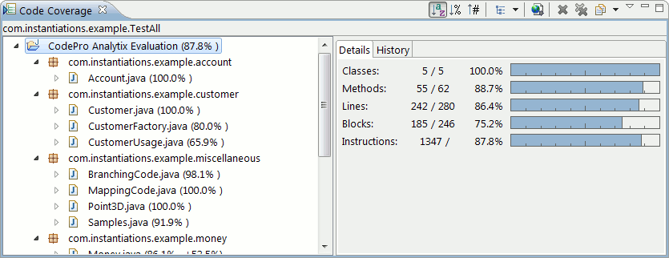
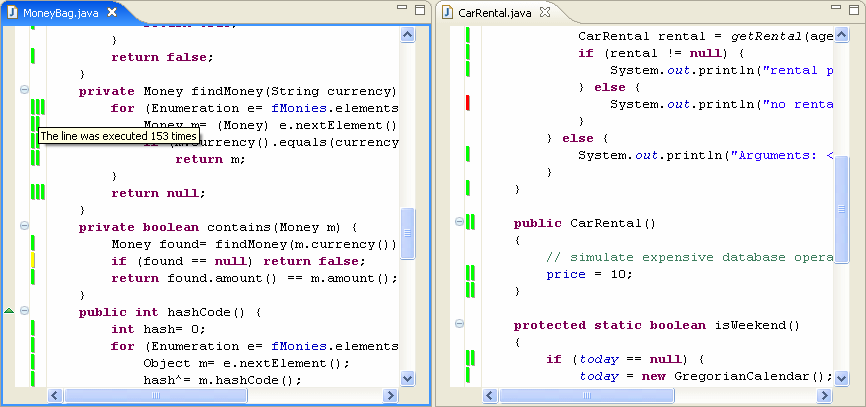
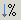
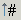
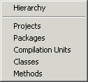
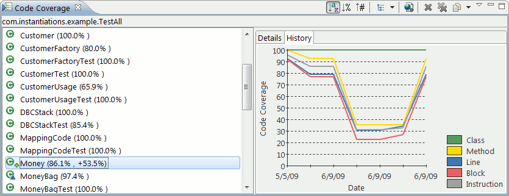
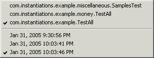
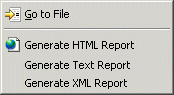

Code Coverage - Coverage ViewThe Coverage View is divided into two sections a content region and a details region. The content region displays the Java elements for which coverage information was recorded. These elements can either be displayed in a hierarchy (like that shown in either the Package Explorer or the Outline View), or as a flat list of elements of a similar kind. |

| Selecting an element in the content region will
cause the details region to reflect the information recorded about
that element. The details region contains two tabbed pages the
Details page and the History page.
The Details page shows the coverage information reported for classes, methods, lines, blocks, and instructions. (Class information is not available when the selected element is a method.) The information is expressed both as a fraction (the number of covered units divided by the total number of units) and as a percentage. The percentage is also represented graphically. Preferences are available to control the colors of the graphic bars and whether percentage changes are shown in the tree view. If the coverage for an item falls below a user established percentage, that item is highlighted in red (or any other chosen color). The meaning of some of these units should be explained. Classes refers to individual classes, not compilation units. Methods should be self-explanatory. Lines correspond to lines of code within the source. Instructions are individual bytecodes executed by the VM. Blocks are groups of instructions that do not include any branches. The History page displays a line graph showing the changes in
the coverage information for the selected element across all of
the available versions of the report. You can use this page to
determine whether the results are generally getting better as well
as to identify whether a particular change to a test increased the
coverage. Preferences
are available to control the number of historical versions kept
for each report. |

You can quickly open a file containing one of the classes or methods shown in the content region by double-clicking on the class or method. You can do the same thing by selecting "Go to File" from the context menu.
Actions
Sorts the elements in the content region alphabetically.
 Sorts the elements in the content region based on the percentage of code that was covered (ordered from least to greatest).
 Sorts the elements in the content region based on the number of lines of code that were not fully executed (ordered from greatest to least). . Preferences are available to control whether the number of uncovered lines are shown in the tree view.
Changes the presentation of items within the content region. The choices are:

Hierarchy - Displays the elements in a hierarchy.
Projects - Displays a flat list of projects.
Packages - Displays a flat list of packages.
Compilation Units - Displays a flat list of compilation units.
Classes - Displays a flat list of classes.

Methods - Displays a flat list of methods.
|
Generates an HTML report from the
currently displayed coverage report.
|
 Selects which code coverage report is being viewed. The available series
are listed first followed by the elements in the selected series.
Selects which code coverage report is being viewed. The available series
are listed first followed by the elements in the selected series.

Context Menu

Go to File - Opens the file containing the selected class or method.
Generate HTML Report - Generates an HTML report from the currently displayed coverage report.
Generate Text Report - Generates a text report from the currently displayed coverage report.
Generate XML Report - Generates an XML report from the currently displayed coverage report.